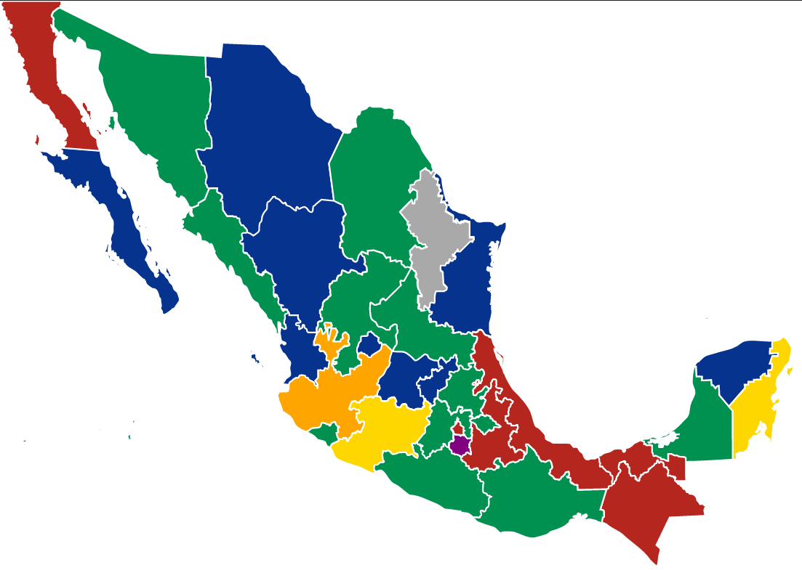
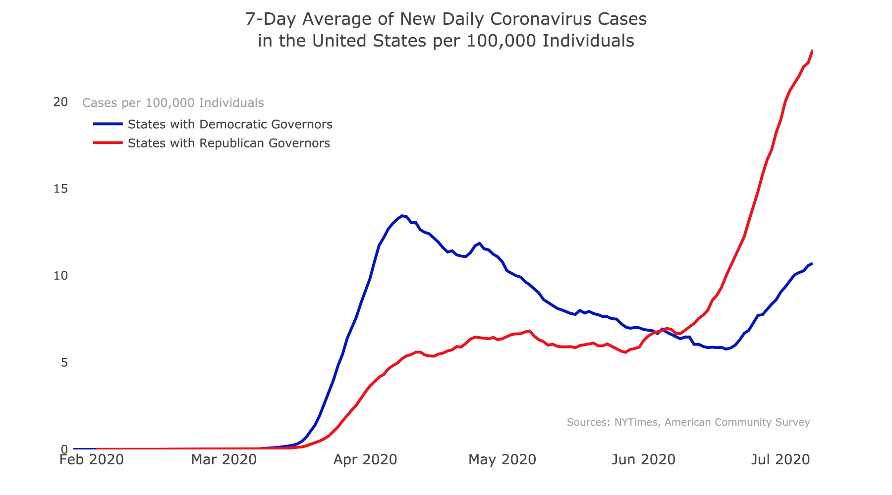

| Partido | Casos confirmados | Defunciones | % de letalidad |
|---|
La distribución de estados según el partido que los gobierna es la siguiente:
PRI: Campeche*, Coahuila, Colima, Guerrero, Hidalgo, Estado de México, Oaxaca, San Luis Potosí, Sinaloa, Sonora, Tlaxcala y Zacatecas. (11 estados).
PAN: Aguascalientes, Baja California Sur, Chihuahua, Durango, Guanajuato, Nayarit, Querétaro, Tamaulipas, Yucatan. (9 estados).
MORENA: Baja California, Chiapas, Ciudad de México, Puebla, Tabasco y Veracruz. (6 estados).
PRD: Michoacán y Quintana Roo. (2 estados).
Movimiento Ciudadano: Jalisco. (1 estado).
Encuentro Social: Morelos (1 estado).
Independiente: Nuevo León (1 estado).
*Campeche es gobernado oficialmente por un gobernador sustituto, pero es militante del PRI y el antiguo gobernador también es del PRI por lo que se cuenta como gobernado por el PRI.
La idea surge de diferentes estudios en los Estados Unidos, donde se analiza el crecimiento en casos de COVID-19 en estados democratas y republicanos, la idea de este proyecto es analizar México de la misma manera pero con los 7 partidos que se reparten los 32 estados de la republica.
Los datos son obtenidos del sitio web oficial del Gobierno de México https://coronavirus.gob.mx/datos/